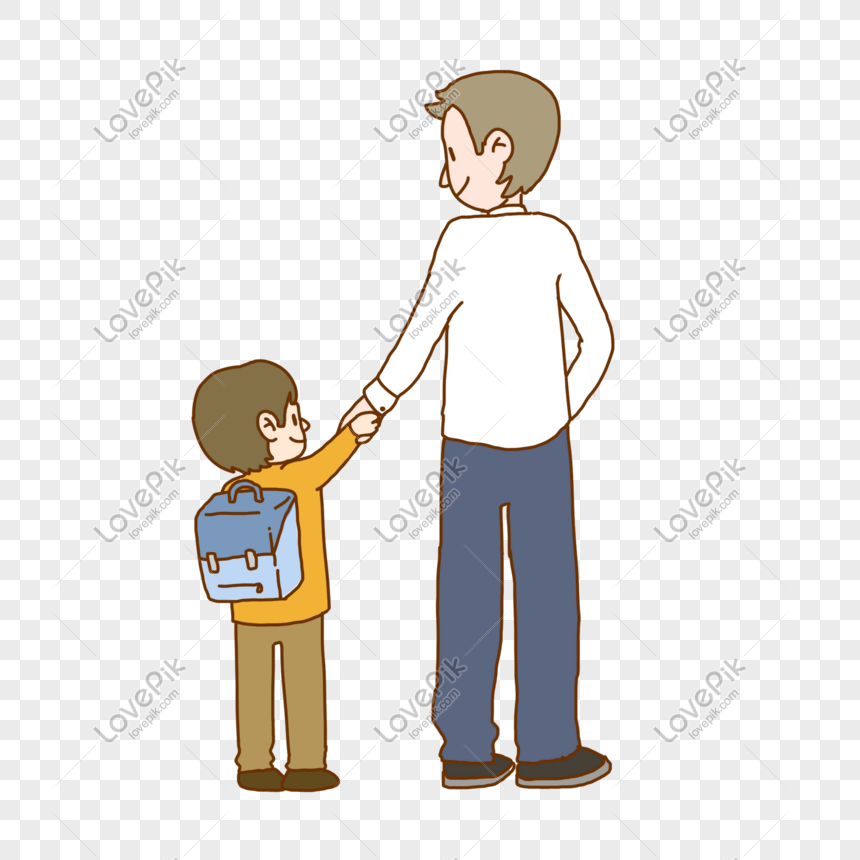

My experience of being a college for me is tough, maybe because quarantine happend at exact time of my college freshmen. I remember that time we were about to graduate on senior highschool on third week of March, but President Duterte declared the quarantine. We just graduated virtually on our seniors. But it's totally fine for me, and besides, we don't have anything to do for it. And then the here's the college years have come. First virtual learning, first year college. I don't grumble about it, but to be honest, many of us seeking those first time moments as a college student. Commuting, eating with your new friends, having great time as fresh men, coming home late becase of traffic. Well, I guess everything happens for a reason. During the time of getting into college, I had an entrance exam at Polytechnic University of the Philippines (PUP), but not great enough for me to get in. I was disapointed when I didn't see my name on the examinees. But luckily, I have a kindhearted parents, they didn't show disapointments just like I saw to myself before.
 Until the time my parents decided to enroll me at University of the East (UE). I was hesitant at first, because the tuition fee is just eye-rolling. But my parents said they can handle it, all I just gotta do is to study and be good at it. My parents always say to me that I don't have to pressure myself eventhough I'm the eldest among my siblings. I just have to live my life and enjoy what I have, but being the eldest, I can't help to think about that someday, my parents won't be there all the time. So I have to learn to sustain myself and give them back from what I mighht become someday. I want to give the effort they always give to us. And I know being good at my college will make them proud.
Studying virtually is just ok for me at all, I'm between being extrovert and introvert, so I can cope up wuth this quarantine situation we have as of to date. Nonetheless, I crave the feeling of being a real college student. The typical day-to-day cycle of it, in spite that I already went to the UE campus to submit my credentials, I hope we could come back as much as possible from this COVID-19. 22